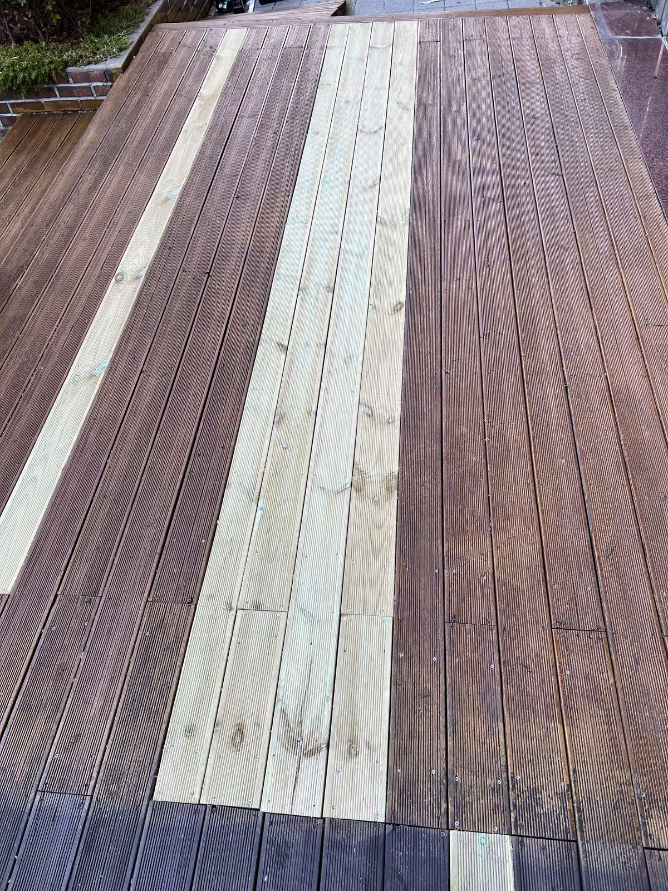
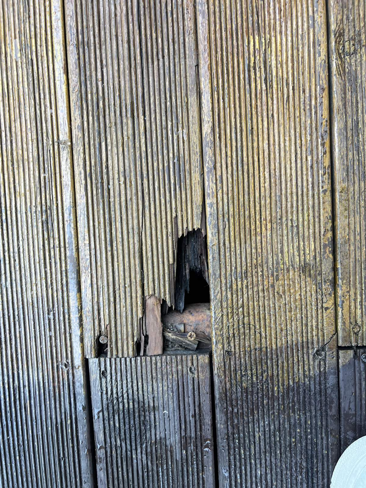
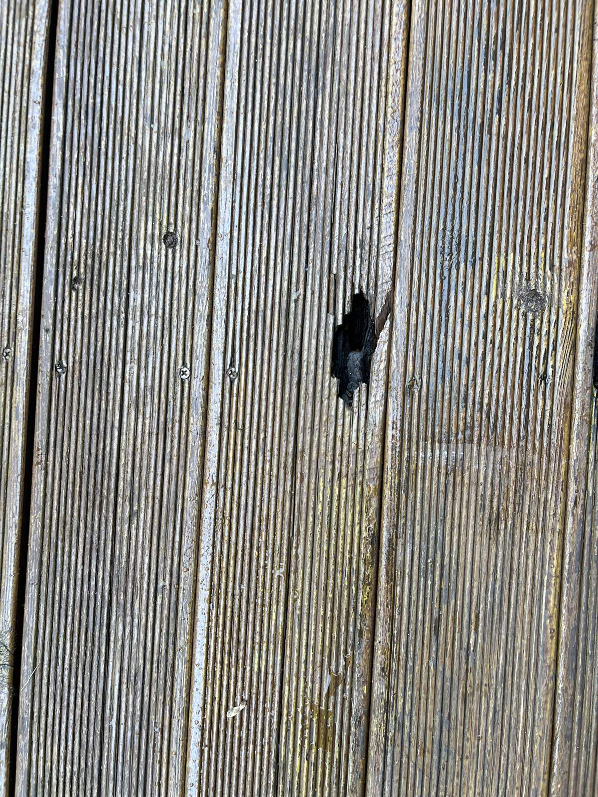
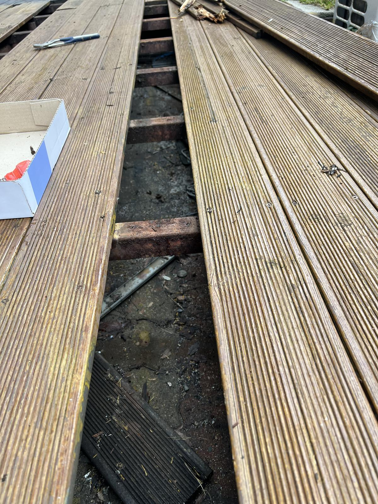
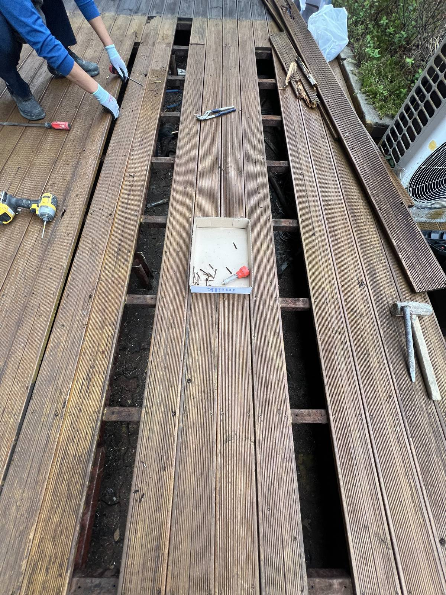
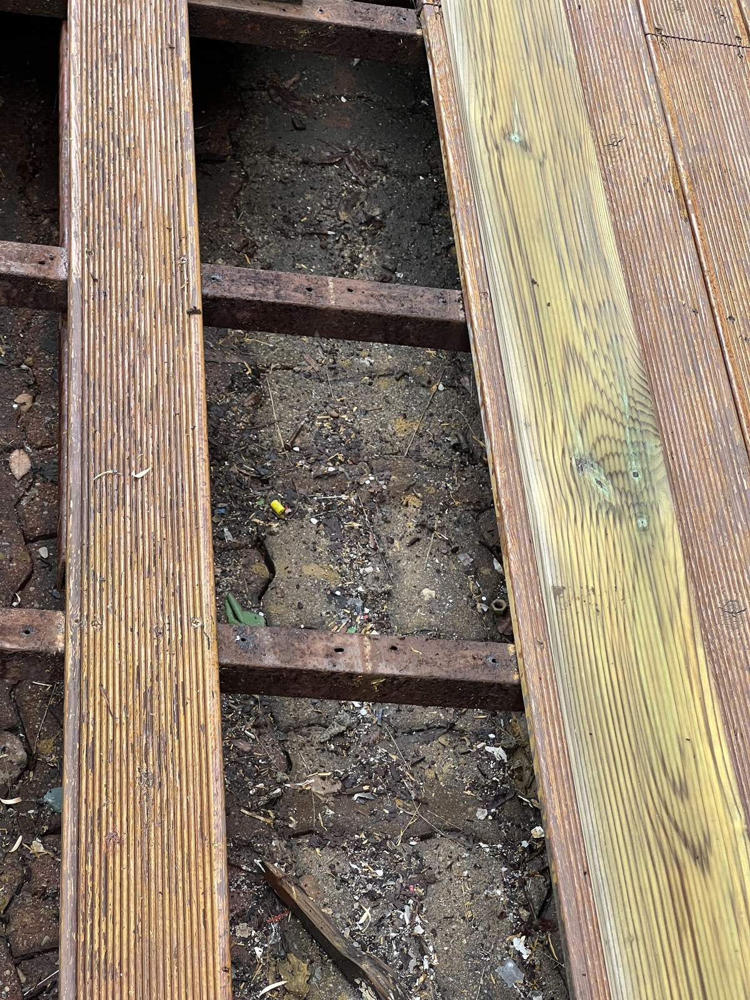
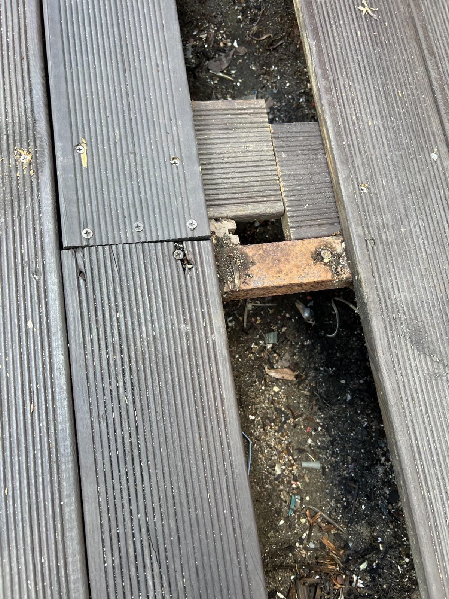
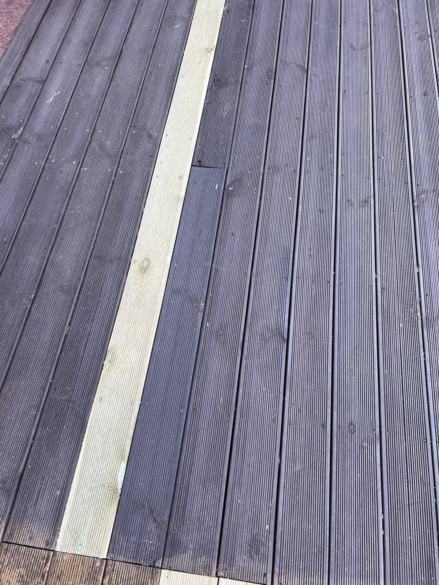
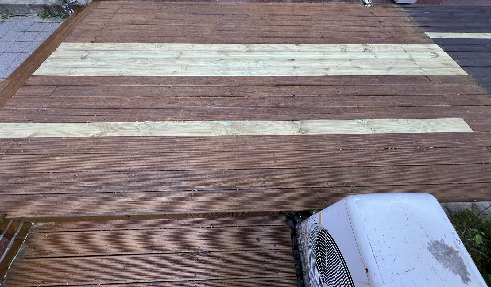
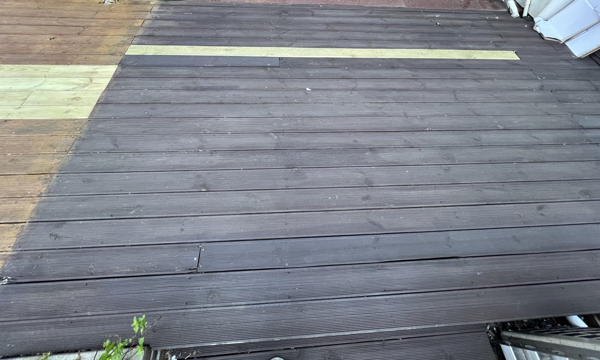

대전 둔산동 상가 앞 나무 데크 보수｜부서진 판재를 걷어 내고 새 판재로 교체

현장 작업 한눈에 보기
- 현장
- 대전 둔산동 · 상가 건물 앞 나무 데크
- 문제
- 판재 끝이 부서지거나 가운데가 뚫린 자리
여러 줄에 걸친 손상 판재 - 작업
- 손상 판재 철거·장선 위 받침 보강
새 판재로 교체 - 결과
- 새 판재를 깐 전체 모습 사진 확인
새 판재 칠(색 맞춤)은 미기재
대전 서구 둔산동 상가 건물 앞 나무 데크 보수 기록입니다. 구멍 나고 부서진 판재를 걷어 내 철제 장선을 드러내고, 받침을 덧댄 뒤 밝은 색 새 판재로 바꿔 까기까지 10월 21일 사진 10장으로 소개합니다.
1. 판재 끝이 부서진 자리
대전 서구 둔산동 상가 건물 앞 나무 데크 보수 현장입니다. 2026년 10월 21일 하루 동안 남긴 사진을 순서대로 소개합니다.
작업 전 데크에는 판재 끝이 부서져 아래가 들여다보이는 구멍이 나 있었습니다.

2. 판재 가운데가 뚫린 자리
다른 자리는 판재 가운데가 뚫려 있었습니다. 이렇게 구멍 난 판재는 밟는 힘을 받으면 더 부서질 수 있어 새 판재로 바꿉니다.

3. 판재를 걷어 낸 줄
손상된 판재가 있는 줄을 걷어 내자 판재를 받치던 철제 장선과 그 아래 바닥이 드러났습니다. 걷어 낸 판재 끝은 부서져 있었습니다.

4. 판재 떼어 내기
판재 사이를 공구로 벌려 한 장씩 떼어 냈습니다. 여러 줄을 함께 걷어 낸 자리도 있습니다.

5. 드러난 철제 장선
판재를 걷어 낸 자리의 철제 장선입니다. 오른쪽에는 이미 깐 밝은 색 새 판재가 보입니다.

6. 장선 위에 받침 덧대기
판재가 걸칠 자리에는 장선 위에 짧은 판재 조각을 덧대 받침을 보강했습니다.

7. 새 판재 깔기
부서진 판재를 걷어 낸 줄마다 밝은 색 새 판재를 깔았습니다. 새 판재는 아직 칠하지 않아 기존 판재와 색이 다릅니다.
8. 색이 짙은 구간
옆의 색이 짙은 구간에서도 판재 한 줄을 새 판재로 바꿨습니다.

9. 보수를 마친 데크
보수를 마친 데크 전체 모습입니다. 바꾼 자리가 밝은 색 줄로 보입니다.

10. 짙은 색 구간 전체
짙은 색 구간 전체 모습입니다. 새 판재가 한 줄 들어가 있습니다.

11. 확인한 범위와 상담 안내
이번 기록은 손상된 판재를 걷어 내고, 장선 위에 받침을 보강한 뒤 새 판재로 바꿔 까기까지입니다. 새 판재의 칠(색 맞춤)과 장선 전체 점검 결과는 이번 기록에 없어 적지 않았습니다.
데크 판재가 부서지거나 밟을 때 꺼지는 자리가 있다면, 데크 전체와 손상된 자리 가까이, 가능하면 판재 틈으로 아래가 보이는 사진을 함께 보내 주세요.